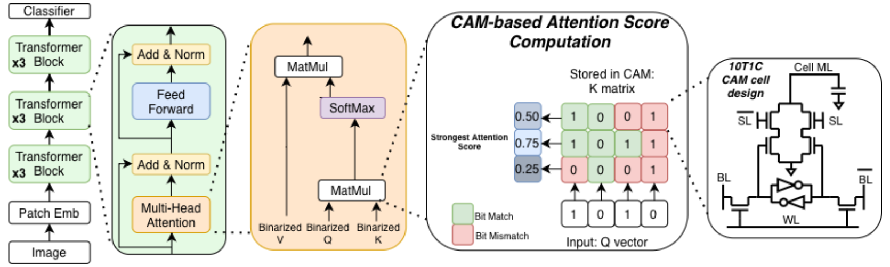

IEEE TCAS-I 2026 · First and Corresponding Author
CAMformer: Binary Associative Memory Is All You Need
CAMformer replaces much of transformer attention's dense arithmetic and score movement with parallel associative-memory retrieval.

9,045
queries per mJ, a reported 10× attention-layer energy-efficiency gain
191
queries per ms, a reported up to 4× attention-layer throughput gain
0.26 mm2
single-core area, reported as 6–8× smaller
1.12%
mean PVT sensing error, reported as 7× lower
Problem
Transformer attention compares every query with every key. The arithmetic, intermediate scores, and data movement therefore grow quadratically with sequence length. CAMformer asks whether attention can instead be implemented as a memory lookup whose physical operation is similarity search.
Approach
Voltage-domain Binary Attention CAM: a 10T1C cell performs XNOR comparison, while charge sharing across a 22 fF capacitor makes matchline voltage track Hamming similarity.
Hierarchical sparse selection: the accelerator keeps the top two scores in each 16-score tile, refines 128 candidates to a global top-32, and applies softmax only to those candidates.
Cross-layer attention design: Hamming Attention Distillation supplies binary queries and keys while values remain BF16, connecting model training to the CAM datapath.
My Role
As first and corresponding author, I led the cross-layer design of CAMformer, from voltage-domain associative sensing through the sparse attention pipeline and system evaluation.
Citation
T. Molom-Ochir, B. F. Morris, M. Horton, C. Wei, C. Guo, B. Taylor, P. Liu, S. X. Wang, D. Fan, H. Li, and Y. Chen, "CAMformer: Binary Associative Memory Is All You Need," IEEE Transactions on Circuits and Systems I: Regular Papers, pp. 1–14, 2026. DOI